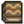
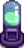

Librero
| Librero | |
 | |
 | |
| Dirección: | Cruzando el puente de la ciudad, arriba del MercaJoja |
El Librero es un vendedor de libros. Este aparece dos veces por estación, en fechas aleatorias, marcadas en el calendario con un globo  .
.
La tienda vende una variedad de libros cada vez. El jugador también puede canjear sus libros aquí. El Librero se encuentra arriba del MercaJoja/El Cine
En los días que el librero esté de visita, aparecerá un mensaje que dirá "El librero está hoy en la ciudad". Está abierto todo el día.
Días de visita
El librero visita el valle dos veces por estación, aleatoriamente, en alguna de las siguientes fechas posibles:[1]
| Estación | Días posibles |
|---|---|
| 11, 12, 21, 22, 25 | |
| 9, 12, 18, 26, 27 | |
| 4, 7, 8, 9, 12, 19, 22, 25 | |
| 5, 11, 12, 19, 22, 24 |
Artículos disponibles
| Nombre | Descripción | Precio | Disponibilidad |
|---|---|---|---|
| Lea esto para adquirir algo de experiencia en todas las habilidades. | 25% de probabilidad de aparecer | ||
| Lea esto para adquirir algo de experiencia agrícola. | Uno de estos libros tiene un 60% de posibilidades de aparecer en el stock por | ||
| Lea esto para adquirir algo de experiencia en pesca. | |||
| Lea esto para adquirir algo de experiencia en minería. | |||
| Lee esto para ganar algo de experiencia en combate. | |||
| Lea esto para adquirir algo de experiencia en la búsqueda de alimento. | |||
| Lea esto para adquirir algo de experiencia agrícola. | Uno de estos libros tiene un 80% de posibilidades de aparecer en venta por | ||
| Lea esto para adquirir algo de experiencia en pesca. | |||
| Lea esto para adquirir algo de experiencia en minería. | |||
| Lee esto para ganar algo de experiencia en combate. | |||
| Lea esto para adquirir algo de experiencia en la búsqueda de alimento. | |||
| Lea esto para adquirir algo de experiencia agrícola. | Uno de estos libros aparecerá en stock por | ||
| Lea esto para adquirir algo de experiencia en pesca. | |||
| Lea esto para adquirir algo de experiencia en minería. | |||
| Lee esto para ganar algo de experiencia en combate. | |||
| Lea esto para adquirir algo de experiencia en la búsqueda de alimento. | |||
| Tienes más posibilidades de encontrar artículos en la basura. | Uno de estos libros aparecerá en stock por | ||
| Las trampas de cangrejo tienen un 25% de posibilidades de producir el doble. | |||
| Las bombas te causan un 25% menos de daño. | |||
| Los cofres del tesoro de pesca tienen la posibilidad de producir huevas. | |||
| Las malezas tienen más posibilidades de producir semillas mixtas. | |||
| Los árboles talados tienen un 5% de posibilidades de producir el doble de madera. | |||
| Ganas +1 Defensa. | |||
| Te haces amigo de la gente un poco más rápido. | |||
| Los monstruos tienen una pequeña posibilidad de obtener el doble de botín. | |||
|  Mapeando los Sistemas de Cuevas | Obtienes un 50% de descuento en el servicio de recuperación de artículos de Marlon. | ||
| Obtendrá un mejor precio al vender artefactos. | |||
| Corres un poco más rápido. | Aparecerá siempre | ||
| Corres un poco más rápido. | Siempre aparecerá después de recibir el poder de Camino del viento vol 1 | ||
| Ganas un poco más de velocidad al montar a caballo. | Aparecerá siempre | ||
| Ahora correrás mucho más rápido por la hierba y los cultivos. | Aparecerá siempre | ||
| Aprenda cualquier receta de la reina de la salsa que aún no conozca. | Siempre aparecerá después de encontrar 100 Nueces doradas | ||
| Lea esto para adquirir algo de experiencia en la búsqueda de alimento. | 33% de probabilidad de aparecer | ||
| Ahora puedes ver el valor de tus artículos. | Aparecerá siempre |
Articulos intercambiables
Los libros comerciales que otorgan poderes solo aparecerán si el jugador ya obtuvo el poder de ese libro. Además, para libros que tienen múltiples artículos de canje, solo uno estará disponible para intercambiar.
| Nombre | Descripción | Precio |
|---|---|---|
| Una gelatina rara que se encuentra en lagos subterráneos. | ||
| Una gelatina rara que se encuentra en agua dulce. | ||
| Una rara gelatina encontrada en el océano. | ||
| Crea un huevo de baba comprimiendo 100 trozos de baba. ¡Un milagro de la ciencia! | ||
|  Incubadora de babas (1) | Incuba huevos de baba para obtener babas. Te permite criar babas en el exterior. | |
| ¡Pica mucho! Ten cuidado. | ||
| Un herrero puede abrirlo por tí. Estos cofres suelen contener antiguas reliquias y curiosidades. | ||
| Un herrero puede abrirlo. ¿Quién sabe lo que habrá dentro? | ||
| Espolvorea sobre barriles, hornos y otros equipos de refinería para recibir al instante el producto. | ||
| Pimientos picantes rellenos de queso y rebozados. | ||
| Hace que los peces piquen aún más rápido y aumenta el tamaño de la "barra de pesca". | ||
| Un material de origen vegetal, resistente pero flexible, y con gran variedad de usos. | ||
| Un tipo especial de madera de mayor resistencia y belleza. | ||
| Una roca combustible usada en la fundición y para fabricar objetos. | ||
| Rocía esto para sacar más monstruos de su escondite. | ||
| Ahh... El olor a pan caliente y salvia. |
Trivia
- El comerciante, Marcello, es el piloto del globo aerostático del Evento de diez corazones de Harvey.
Referencias
- ↑ Ver Utility::getDaysOfBooksellerThisSeason en el código del juego.
Historial
- 1.6: Introducido.